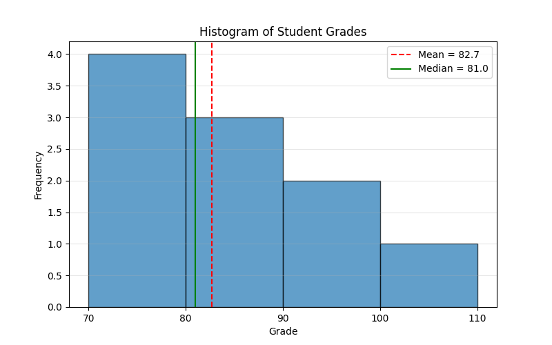
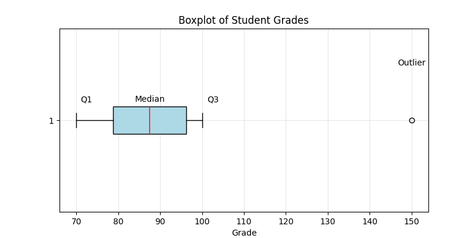

Section 1.1 Descriptive Statistics
Descriptive statistics summarize and describe the main features of a dataset. These numbers are very useful for getting a first look at the patterns in the data and goes by the name Exploratory Data Analysis. The main numbers you would be interested in here are as follows.
-
Mean (Average): The mean is the average of all data values. We will usually denote mean by the Greek symbol \(\mu\text{.}\) So, if your data contains the five values \(\{ 1, 2, 2, 3, 4\}\text{.}\) Then mean will be\begin{equation*} \mu = \frac{1+2+2+3+4}{5} = \frac{12}{5} = 2.4. \end{equation*}In general the formula fot a dataset containing \(N\) values, \(\{x^{(1)}, x^{(2)}, \cdots, x^{(N)}\}\text{,}\) will be\begin{equation} \mu = \frac{1}{N} \sum_{i=1}^{N}\, x^{(i)},\tag{1.1.1} \end{equation}where I have used a common summation symbol \(\sum\) for brevity, which stands for\begin{equation*} \sum_{i=1}^{N}\, x^{(i)} \equiv x^{(1)} + x^{(2)} + \cdots + x^{(N)}. \end{equation*}Note also that we are using superscripts to denote individual data points. We will try to use this notation in this book whenever appropriate.
-
Median: Median is the number below (or above) which 50% of the data resides; it does not have to be any of the data points in the data itself. To calculate median, you would first sort the data. Then, if the data has odd number of data points, then median is the middle data and if the data has even number of points, then median would be the average of the two middle numbers. Thus, suppose the data is \(\{3,1,4 \}\text{,}\) then you would first sort the data, giving you \(\{1, 3, 4\}\text{,}\) then the median will be the middle number 3. Suppose you have the data \(\{3,1,4,2\}\text{.}\) First sort it to \(\{1,2,3,4\}\text{.}\) Now, we have two middle data points, that is 2 and 3. Median will be their average, 2.5.
-
Mode: Mode is the most frequently occurring value in the dataset. A dataset may have no mode, one mode, two mode, or any number of modes. For instance the dataset \({2,4,3,7,1}\) does not have a mode, \(\{2, 4,4,5,7\}\) has one mode equal to \(4\text{,}\) the data \(\{2,4,4,5,7,7,7\}\) has one mode equal to \(7\) and the data \(\{1,12,12,12, 3, 4,4,4\}\) has two modes, one at \(4\) and the other at \(12\text{.}\)
-
Variance: Variance measures how much the data varies from the mean. The square root of variance is called standard deviation, which is usually denoted by the symbol \(\sigma\) (pronounced sigma). The variance, itself is denoted by just squaring this symbol, viz., \(\sigma^2\text{.}\) Suppose we have a dataset containing \(N\) values, \(\{x^{(1)}, x^{(2)}, \cdots, x^{(N)}\}\text{,}\) whose mean is \(\mu\text{,}\) whose formula is given above in Eq. (1.1.1), then variance will be\begin{equation} \text{Variance},\ \sigma^2 = \frac{1}{N} \sum_{i=1}^{N} \left( x^{(i)} - \mu \right)^2. \tag{1.1.2} \end{equation}Let’s calculate variance of dataset \(\{ 1, 2, 2, 3, 4\}\text{.}\) We first calculate mean.\begin{equation*} \mu = \frac{1}{5} \times (1+2+2+3+4) = 2.5. \end{equation*}Then, variance\begin{align*} \sigma^2 \amp = \frac{1}{5} \left[ \left( 1 - 2.5 \right)^2 + \left( 2 - 2.5 \right)^2 + \left( 2 - 2.5 \right)^2 + \left( 3 - 2.5 \right)^2 + \left( 4 - 2.5 \right)^2\right] \\ \amp = \frac{1}{5} \left[. 1.5^2 + 0.5^2 + 0.5^2 + 0.5^2 + 1.5^2 \right] = \frac{5.25}{5} = 1.05. \end{align*}Finally, we can find the standard deviation.\begin{equation*} \sigma = \sqrt{\sigma^2} = \sqrt{1.05} = 1.024. \end{equation*}Note that the unit of \(\sigma\) is same as that of the data points themselves, but that of variance will be square of the units of the data points. Thus, if the data were height in \(\text{m}\text{,}\) then \(\sigma\) will be in \(\text{m}\text{,}\) but variance will be in \(\text{m}^2\text{.}\)Standard deviation has considerable importance in understanding data that are nearly Gaussian in their distribution since that distribution is fully specified by only its mean and the standard deviation. Considerable interpretive statistics is based on the data that are distributed approximately Gaussian. We will study this aspect of statistics in a late section.
-
Histogram: A histogram refers to a frequency distribution of values. It is usually presented as a plot with bins in which data may be distributed. Suppose you have data, whose values denoted by letter \(x\text{,}\) in the range from \(0\) to \(10\text{.}\) Then, with a bin size of \(2\text{,}\) you can distribute the data, with minimum value \(0\) and maximum value \(10\) in bins: \(0\le x \lt 2\text{,}\) \(2\le x \lt 4\text{,}\) \(4\le x\lt 6\text{,}\) \(6\le x \lt 8\text{,}\) \(8\le x \lt 10\text{,}\) \(10\le x \lt 12\text{.}\) Suppose, you have the following dataset \(\{ 0, 2, 2, 3, 3, 6, 7, 7, 8, 10 \}\) Then, you will get the table Table 1.1.1 showing how the data is distributed across the bins.
Table 1.1.1. Histogram Bin Range Data Count Frequency 1 \(0\le x \lt 2\) \(\{ 1\}\) 1 0.1 2 \(2\le x \lt 4\) \(\{ 2, 2, 3,3\}\) 4 0.4 3 \(4\le x \lt 6\) \(\{\}\) 0 0 4 \(6\le x \lt 8\) \(\{ 6, 7, 7\}\) 3 0.3 5 \(8\le x \lt 10\) \(\{ 8\}\) 1 0.1 6 \(10\le x \lt 12\) \(\{ 10\}\) 1 0.1 Graphically, you would plot the frequency column against the Bin or the Range column. The following Python Code will produce the plot given in Figure 1.1.2. The visual picture obviously gives you a very direct way to see the pattern in the data, including a coarse view of the probability distribution of various values in the data.import matplotlib.pyplot as plt import numpy as np # Data data = [0, 2, 2, 3, 3, 6, 7, 7, 8, 10] # Desired bin size bin_size = 2 def plot_histogram(data, bin_size=2): # Calculate bin edges min_val = min(data) max_val = max(data) bins = np.arange(min_val, max_val + bin_size, bin_size) # Plotting the histogram plt.hist(data, bins=bins, edgecolor='black', alpha=0.7) # Adding labels and title plt.xlabel('Value') plt.ylabel('Frequency') plt.title(f'Histogram of Data with Bin Size = {bin_size}') # Display the plot plt.xticks(bins) # Optional: to show bin edges as x-axis ticks plt.grid(axis='y', alpha=0.75) # Optional: add a grid for better readability plt.show() return None plot_histogram(data, bin_size)Figure 1.1.2. Histogram with data in range 1 to 10 with bin size 2. -
Range and Quartiles: First, we sort the data. Range of data is simply Max minus Min of the data. It gives a measure of how widely do the values in the data lie. For quartiles, we then divide data into 4 parts. The first quartile (Q1), also known as the lower quartile, represents the 25th percentile, meaning 25% of the data falls below this value. The second quartile (Q2), also known as the median, represents the 50th percentile, meaning 50% of the data falls below this value. The third quartile (Q3), also known as the upper quartile, represents the 75th percentile, meaning 75% of the data falls below this value. Finally, the fourth quartile (Q4) represents the top 25% of the values of the dataset. for simplicity, suppose the sorted dataset contains \(\{1,1, 3,4, 5, 5, 7,8\}\) Then \(Q1 = 1\text{,}\) \(Q2 = 4\text{,}\) \(Q3 = 5\text{,}\) and \(Q4 = 8\text{.}\)A boxplot or a box-and-whisker plot is a compact way to display the min, quartiles and the max. We draw a box that spans the range from Q1 to Q3, called the interquartile (IQR) showing the middle \(50\%\) of the data. By using IQR with Q1 and Q3, we also define thresholds for spotting outliers in the data. The outliers are shown as points on boxplots as shown in Figure 1.1.3.Example: Suppose we have the following dataset representing student scores on a quiz:\begin{equation*} \text{scores} = [20, 55, 60, 65, 70, 75, 80, 85, 90, 95, 100, 120, 150] \end{equation*}In this data, we can conclude: Median (Q2) = (75 + 80)/2 = 77.5, Q1 = median of lower half = 60, Q3 = median of upper half = 90. The IQR for the box will be IQR = Q3-Q1 = 30. We also can notice outliers in the data by calculating the lower bound for the data from:\begin{equation} \text{lower bound} = Q1 - 1.5 \times IQR = 60 - 1.5 \times 30 = 15,\tag{1.1.3} \end{equation}\begin{equation} \text{upper bound} = Q3 + 1.5 \times IQR = 90 + 1.5 \times 30 = 135,\tag{1.1.4} \end{equation}Here, we see that the data of 150 is an outlier.The following Python program will generate a good looking boxplot of the data.
import matplotlib.pyplot as plt import numpy as np # Sample data scores = [20, 55, 60, 65, 70, 75, 80, 85, 90, 95, 100, 120, 150] def gen_boxplot(data): # Create the boxplot using matplotlib plt.figure(figsize=(8, 4)) plt.boxplot(data, vert=False, patch_artist=True, boxprops=dict(facecolor='lightblue'), medianprops=dict(color='red')) plt.title('Boxplot of Student Scores') plt.xlabel('Score') plt.grid(True) plt.savefig("boxplot.png") plt.show() #----------- gen_boxplot(scores)Figure 1.1.3. Illustration of a Boxplot. The box shows the middle 50% of the data and the outliers are shown as point, here the point at 150 is the only outlier. The net range, other than outlier is shown between the two lines.